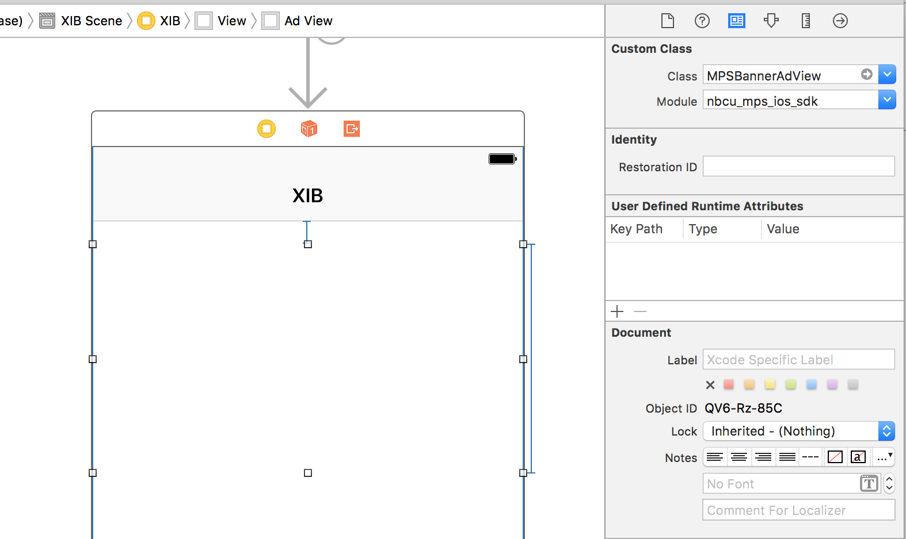
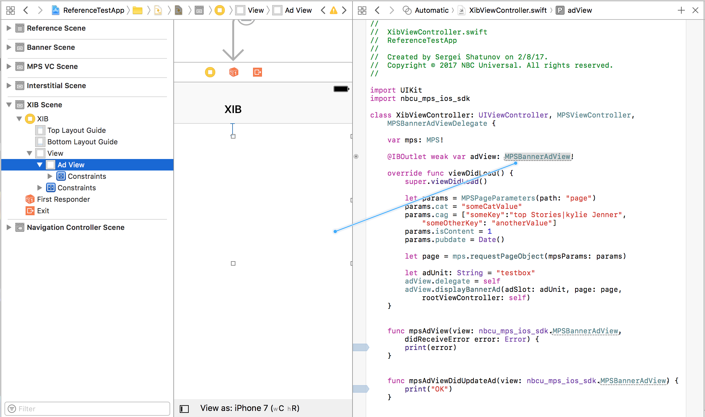
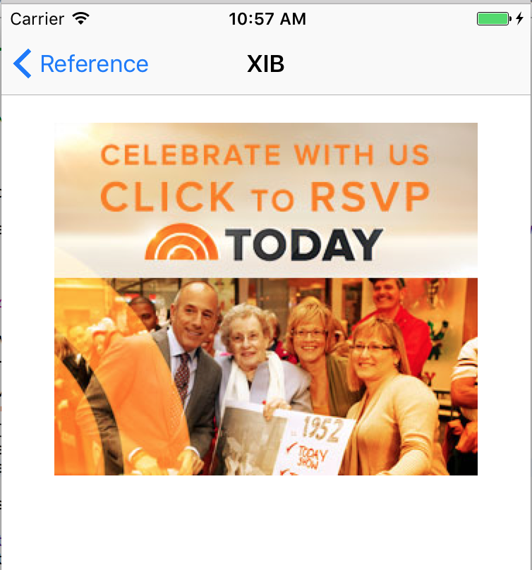

Requesting Banner Ads using a Storyboard
Now that you have setup your project with the SDK, let's put banner ads into it.
A MPSBannerAdView can be created from a storyboard or from code. Since layouts are generally defined in a storyboard, this guide shows the storyboard method.
Add an MPSBannerAdView in a Storyboard
The MPSBannerAdView needs a reference in code to load ads into it.

Open up the Assistant Editor by navigating in Xcode to View > Assistant Editor > Show Assistant Editor.
In the Assistant Editor, make sure the ViewController.h file is showing.
Next, hold the control key, click the MPSBannerAdView and drag your cursor over to ViewController.h. For a Swift project, follow the steps above but add a reference to the MPSBannerAdView in the ViewController.swift file.

Xcode will generate and connect a property for you. Name it "adView", and click Connect.
To resolve a compilation error, also include import nbcu_mps_ios_sdk in ViewController.swift or ViewController.h so the compiler knows that MPSBannerAdView is a valid class.
Load an Ad into MPSBannerAdView
Finally, add the following code into ViewController.swift to load an ad into the banner view.
override func viewDidLoad() {
super.viewDidLoad()
let params = MPSPageParameters(path: "page")
params.cat = "someCatValue"
let page = mps.requestPageObject(mpsParams: params)
let targeting = ["targetingKey": "targeting-value"];
adView.delegate = self
adView.displayBannerAd(adSlot: "testbox", additionalTargeting: targeting, page: page, rootViewController: self)
}
Or, if you're following along in Objective-C add the following code to ViewController.m.
- (void)viewDidLoad {
[super viewDidLoad];
MPSPageParameters *params = [[MPSPageParameters alloc] initWithPath:@"page"];
page = [mps requestPageObjectWithMpsParams:params];
adView.delegate = self;
[adView displayBannerAdWithAdSlot:@"testbox" page:page rootViewController:self];
}
Result
This image shows the displayed banner ad.
